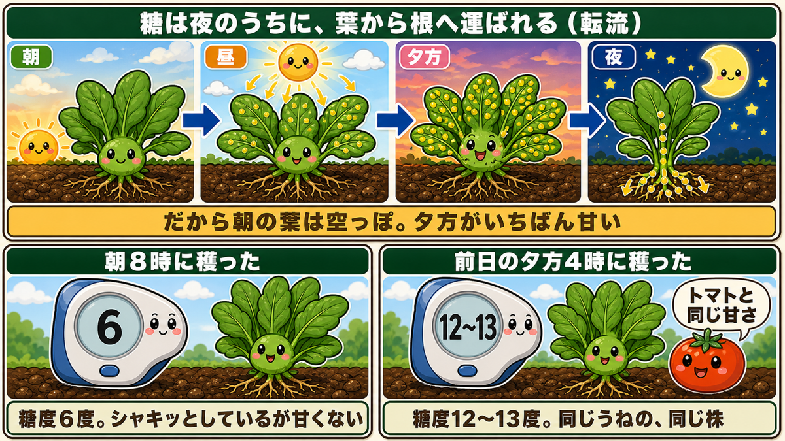
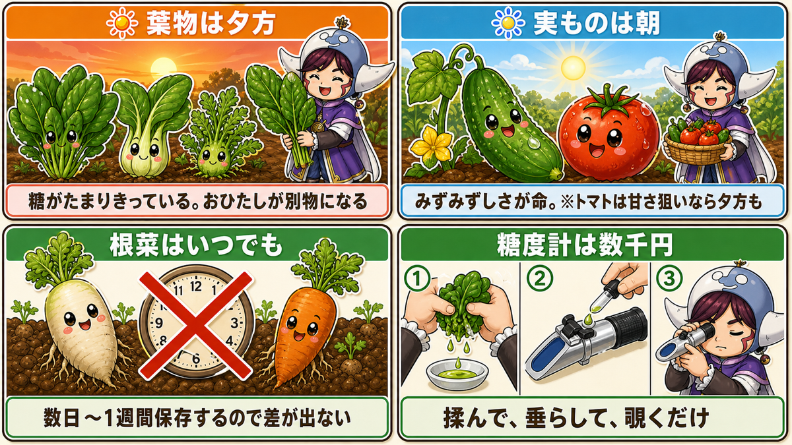
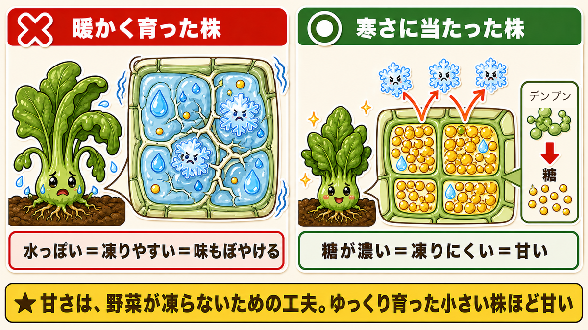
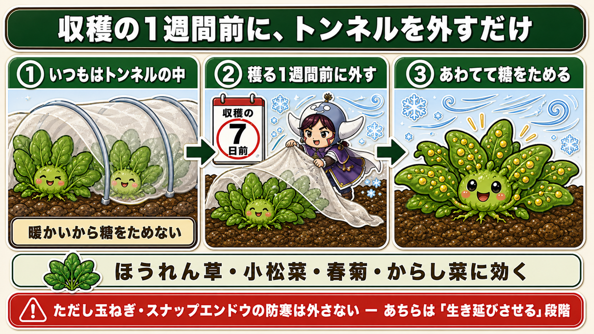
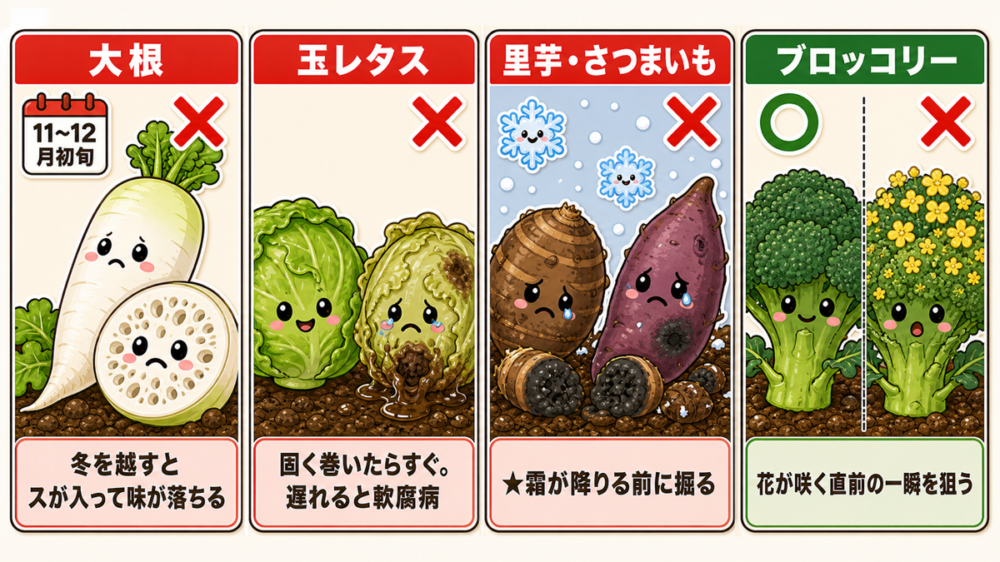
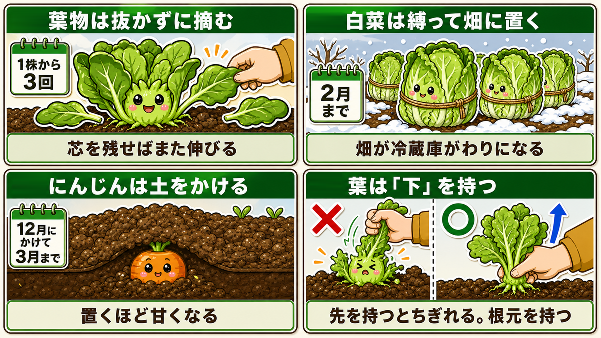

朝どりは甘くない🥬 同じほうれん草で糖度が2倍変わる話
🗨️「せっかく育てたのに、なんだか味がぼんやりする」
🗨️「朝どり野菜がいちばんおいしいんでしょ？」
🗨️「冬の野菜が甘いのは知ってるけど、なぜ？」
どうも、8150（えいこう）です🌱 家庭菜園歴8年、理科の教員免許を持っていて、有機・無農薬で野菜を育てています。
今回は、収穫の話です。
先に、この記事でいちばん言いたいことを言っておきますね。
朝どりのほうれん草は、甘くありません。
これ、私も長いこと逆に思っていました。朝どりこそが最高だと。スーパーでも「朝採れ」と大きく書いてありますよね。
でも実際に測ってみると、こうなります。
- 朝8時に穫ったほうれん草 … 糖度6度
- 前日の夕方4時に穫ったほうれん草 … 糖度12〜13度
同じうね、同じ品種、同じ日に育った株です。それで倍違う。
12〜13度というのは、「甘いね」と言われるトマトと同じくらいの数字です。ほうれん草がトマトの甘さになる。穫る時間を変えるだけで。
今日は、この話をします☺️
📖 この記事の目次
なぜ、朝は甘くないのか

野菜は、光合成で糖を作ります。ここまではご存じのとおりだと思います。
問題は、作った糖がどこにあるか、です。
糖は、夜のうちに引っ越します
野菜の1日は、こうなっています。
- 朝、太陽が出る → 光合成が始まる
- 日中ずっと、葉に糖がたまっていく
- 夕方、葉は糖でいっぱいになる
- 夜のあいだに、その糖が茎や根へ運ばれていく
- 朝、葉は空っぽになっている
この「夜のうちに運ぶ」動きを、転流（てんりゅう）といいます。
つまり朝どりの野菜は、糖を運び終わったあとの葉なんです。だから甘くない。
なぜ、わざわざ夜に運ぶのか
これ、私は聞いたとき「うまくできているな」と思いました。
昼のあいだ、葉は光合成という工場の仕事で忙しい。そこに製品（糖）を置きっぱなしにしておくと、工場が詰まって効率が落ちます。
だから夜のうちに、倉庫へ移す。倉庫というのが、茎と根なんですね。
夜は光合成ができないので、運搬に専念できる。工場と倉庫、昼と夜で役割を分けているわけです。
だから、朝の野菜は「シャキッ」なんです
ここまで読むと「じゃあ朝どりは意味がないのか」と思われるかもしれませんが、そうではありません。
朝の野菜には、朝の良さがあります。
- 水分がたっぷりで、シャキッとしている
- そのかわり糖が少ない
- そして、えぐみがやや強い
日が当たって光合成が進むと、体内の水分は少しずつ失われていきます。だから夕方の野菜は、朝ほどパリッとはしていません。
つまり、こういうトレードオフです。
朝 ＝ みずみずしいが、甘くない。夕方 ＝ 甘いが、みずみずしさは落ちる。
どちらが正解ということではなく、何を食べたいかで決める話なんですね。
じゃあ、いつ穫ればいいのか

野菜ごとに、答えが変わります。
葉物は、夕方
ほうれん草・小松菜・春菊・水菜。このあたりは、迷わず夕方です。
葉物は、葉そのものを食べる野菜です。つまり工場をそのまま食べている。だったら、糖がたまりきっている夕方に穫るのが理にかなっています。
夕方に穫ったほうれん草のおひたしは、本当に別物になります。私はこれを知ってから、夕方の畑に出るようになりました。夕暮れの畑って、けっこういいものですよ。
きゅうり・トマトなどの実は、朝
きゅうりは、みずみずしさが命の野菜です。あのパリッとした歯ごたえが落ちたら、きゅうりである意味が半分なくなります。
なので、実を食べる野菜は朝に穫ってください。
ただしトマトは例外があります。甘さを狙うなら、夕方に穫るという選択肢もあり。生でかじるなら朝、料理に使うなら夕方、くらいで考えていいと思います。
根菜は、あまり気にしなくていい
大根・にんじん・じゃがいも。このあたりは、穫ってすぐ食べるものではありませんよね。
数日から1週間くらい保存してから使うことが多いので、収穫時刻の差はほとんど関係ありません。都合のいいときに穫ってください。
ひとつだけ。若いにんじんをサラダで生のまま食べるなら、夕方に穫ったほうが甘いです。生で食べるときだけは、時間を意識する価値があります。
糖度計は、数千円で買えます
ここまで数字の話をしてきましたが、これはご自分で測れます。
屈折式の糖度計という道具があって、数千円で手に入ります。使い方はとても簡単です。
- 葉をよく揉んで、汁を絞り出す
- その汁をレンズに数滴たらす
- カバーをして、覗く
これだけ。光が糖度によって曲がり方を変えるので、数字が見えるという仕組みです。
これ、お子さんと一緒にやると本当に盛り上がります。詳しくは最後の理科パートでお話ししますね。
寒さで甘くなるのは、凍らないためです

もうひとつの「甘くなる」の話をします。冬の野菜が甘いのは、なぜでしょうか。
答えは、凍らないためです。
野菜は、自分で不凍液を作ります
寒さに当たると、野菜は体の中でこういうことをします。
細胞にためこんでいたデンプンを、糖に変える。
砂糖水は、ただの水より凍りにくいですよね。同じことです。細胞の中の糖の濃度を上げると、その細胞は凍りにくくなる。
つまり冬の野菜は、生き延びるために自分で不凍液を作っている。そして人間は、それを「甘い」と言って食べているわけです。
なんだか申し訳ないような、でもよくできているなと思う話です。
だから、小さくてゆっくり育った株ほど甘い
ここから、面白い結論が出ます。
ゆっくり育って、小さく締まった株ほど、糖の濃度が高い。
逆に、肥料と水でぐんぐん大きくした株は、水っぽくて糖が薄い。だから凍りやすいし、味もぼやけます。
「大きく育ったほうがいい」という感覚は、冬の野菜については当てはまらないんですね。むしろ、こぶりでずんぐりした株のほうが当たりです。
冬にスナップエンドウが小さい株のほうが強いのも、同じ理屈です。糖が濃いから凍りにくい。生き延びる力と、おいしさが同じものだというのは、なかなか味わい深い話だと思います。
★寒締め ー 穫る1週間前に、わざと寒さに当てる

このしくみを、こちらから使ってやる方法があります。寒締め（かんじめ）といいます。
やり方は、拍子抜けするほど簡単です。
収穫の1週間前に、トンネルや不織布を外す。
それだけ。あとは寒さが仕事をしてくれます。
なぜ効くのか
トンネルの中は暖かいので、野菜は「凍る心配はない」と判断しています。だから糖をためこむ必要がない。
そこで、穫る直前にトンネルを外す。すると野菜は急に寒さにさらされて、あわてて糖をためこみます。
こちらとしては、そのタイミングで穫ればいい。ちょっとずるいですが、これが寒締めです。
どの野菜で効くか
- ほうれん草 … いちばん有名で、いちばん差が出ます。まずはこれで試してください
- 小松菜・春菊 … しっかり効きます
- からし菜（わさび菜） … ★暖かい時期だと「辛いだけ」ですが、寒さに当たると辛味の中に甘みが乗ります
外すのは1週間前くらいから。あまり早く外すと、寒さで傷んでしまうので、そこは天気を見ながら加減してください。
ちなみに、それでも守るものはあります
寒締めは葉物の話です。玉ねぎやスナップエンドウの防寒は、外さないでください。
あちらは「甘くする」ではなく「生き延びさせる」段階なので、目的が違います。混同しないようにしてくださいね。
穫りどきを逃すと、甘さは消えます

せっかく甘くなっても、穫るのが遅れると台無しになる野菜があります。ここは覚えておいてください。
大根 ー 冬を越すとスが入ります
大根を畑に置きっぱなしにすると、中にスが入ります。スというのは、内部に細かい空洞ができて、水分が抜けてスカスカになる状態のことです。
こうなると、味が落ちます。
- 年内どりの大根 … 11月〜12月初旬がベスト
- 春どりの大根 … ★春は成長が早いので、遅れると一気に辛く硬くなります
玉レタス ー 固く巻いたら、すぐ
固く結球したら、待たないでください。遅れると軟腐病（なんぷびょう／株元から溶けるように腐る病気）が出たり、アブラムシが増えたりします。
里芋・さつまいも ー 霜が降りる前に
これは期限のあるタイプです。★霜に当たると傷んで、腐ってきます。
初霜の予報が出たら、その前に掘る。ここだけは天気予報とにらめっこしてください。
ブロッコリー ー 花が咲く直前
ブロッコリーとして食べているあの緑のかたまりは、つぼみの集まりです。
だから収穫が遅れると、黄色い花が咲きます。咲いてしまうと硬くて食べられません。
つまりブロッコリーの収穫は、花が咲く直前の一瞬を狙う作業なんですね。粒がふくらんできて、まだ黄色が見えないうち。そこです。
茎ブロッコリーの脇芽は、★真冬は大きくならないので、小さいうちに穫ってください。待っても大きくなりません。
穫り方でも、味は変わります

最後に、穫り方の話を少しだけ。
葉物は、抜かずに摘む
株ごと抜かずに、外側の葉から摘んでいく。真ん中の芯を残しておけば、そこからまた伸びてきます。
1株から3回くらい穫れます。しかも、そのつど新しい葉が食べられる。
白菜は、縛って畑に置く
収穫せずに、外葉で全体を包んで紐で縛る。こうすると畑が冷蔵庫がわりになって、2月ごろまで置いておけます。
必要なときに1個ずつ穫る。これが白菜のいちばん贅沢な食べ方だと思っています。
にんじんは、土をかけて畑で保存
12月に土をかけておくと、3月上旬まで畑で持ちます。
寒さに当たり続けるので、置いておくほど甘くなります。これは寒締めの延長ですね。
葉は「下」を持つ
にんじんや大根を抜くとき、葉の先のほうを持って引っ張ると、途中でちぎれます。
葉の根元、株にいちばん近いところを持って、まっすぐ上に引く。これだけで失敗が減ります。
学ぶ：工場を食べるか、倉庫を食べるか🔬
理科の時間です。ここまでの話が、ひとつにつながります。
野菜を「工場」と「倉庫」で分けてみてください。
- 葉 … 光合成をする工場
- 茎・根 … 糖をためる倉庫
この分け方をすると、いろいろなことが説明できます。
なぜ根菜は甘いのか
大根、にんじん、さつまいも。根菜が甘いのは偶然ではありません。
倉庫そのものを食べているからです。
葉が一日じゅう働いて作った糖が、毎晩そこへ運び込まれる。それを何か月も続けた結果が、あの太った根です。人間はその貯金を横取りしているわけですね。
さつまいもが特別に甘いのも、これで説明がつきます。あれは究極の倉庫なんです。
なぜ葉物だけ、時間で味が変わるのか
工場は、中身が一日で入れ替わります。朝は空っぽ、夕方は満杯。だから穫る時間で味が変わる。
倉庫は、何か月もかけて少しずつ貯まっていきます。一日ぶんの出入りなんて誤差です。だから時間で変わらない。
葉物は夕方、根菜はいつでもいい。この使い分けの理由が、ここにあります。
お子さんと一緒なら、これをやってください
自由研究として、これ以上のものはないと思います。
用意するもの … 屈折式の糖度計（数千円）
- 同じうねのほうれん草を、朝8時に1株、夕方4時に1株、収穫する
- それぞれ葉をよく揉んで、汁を絞る
- 糖度計で測る
朝は6度、夕方は12度前後。目の前で、はっきり倍の差が出ます。
「同じ畑の、同じ野菜なのに、なぜ？」から始めて、光合成と転流の話まで持っていける。しかも結論が「じゃあ今日は夕方に穫ろう」という行動につながる。
理科が、そのまま晩ごはんになるんです。こういう学びが、いちばん残ると思っています🥬
まとめ
ここまで読んでくださって、ありがとうございます！
甘さは、育て方だけでなく穫り方でも決まります。ポイントを整理しておきますね。
- ★葉物は夕方に穫る。朝は糖度6度、夕方は12〜13度。糖は夜のうちに根へ運ばれる（転流）
- きゅうりなど実ものは朝。みずみずしさが命。根菜は時間を気にしなくていい
- 寒さで甘くなるのは、凍らないために糖をためる不凍液のしくみ。★小さくゆっくり育った株ほど甘い
- ★寒締め ー 穫る1週間前にトンネルを外す。ほうれん草でいちばん差が出ます
- 穫りどきを逃さない。大根はスが入る、玉レタスは軟腐病、里芋は霜の前、ブロッコリーは花が咲く直前
- 葉物は抜かずに摘む。白菜は縛って畑に置く。にんじんは土をかけて3月まで
全部やろうとしなくて大丈夫です。今日の夕方、ほうれん草を1株だけ穫ってみてください。いつも朝に穫っている方なら、その違いにきっと驚きます。道具も要りません。時間を変えるだけです🥬
次回は、いよいよ来年の話。今年の畑を振り返って、来年の作付けを決める方法をお話しします🗺️
屈折式糖度計（Brix 0〜32%）
この記事の主役です。朝と夕方のほうれん草を測ると、6度と12度がその場で出ます。葉を揉んで、汁をたらして、覗くだけ。お子さんの自由研究にも、これ以上ないと思います。
![[商品価格に関しましては、リンクが作成された時点と現時点で情報が変更されている場合がございます。]](https://hbb.afl.rakuten.co.jp/hgb/56d214ed.82e55a39.56d214ee.0964bf9a/?me_id=1335769&item_id=10000348&pc=https%3A%2F%2Fthumbnail.image.rakuten.co.jp%2F%400_mall%2Fgood-item%2Fcabinet%2F06374369%2Fcompass1553596495.jpg%3F_ex%3D240x240&s=240x240&t=picttext "[商品価格に関しましては、リンクが作成された時点と現時点で情報が変更されている場合がございます。]")

不織布
寒締めは「収穫の1週間前に外す」作業なので、まずかけておくものが要ります。かけっぱなしにできるので、外すタイミングだけ考えればよくなります。
![[商品価格に関しましては、リンクが作成された時点と現時点で情報が変更されている場合がございます。]](https://hbb.afl.rakuten.co.jp/hgb/56bc237a.e97551b1.56bc237b.2513ed10/?me_id=1310260&item_id=10000879&pc=https%3A%2F%2Fthumbnail.image.rakuten.co.jp%2F%400_mall%2Fdiokasei%2Fcabinet%2F007fusyokufu%2F12g%2Fimgrc0092049705.jpg%3F_ex%3D240x240&s=240x240&t=picttext "[商品価格に関しましては、リンクが作成された時点と現時点で情報が変更されている場合がございます。]")
剪定バサミ（収穫用）
葉物を抜かずに摘むとき、外葉をきれいに切れると株が傷みません。切り口がつぶれると、そこから傷みが入ります。
![[商品価格に関しましては、リンクが作成された時点と現時点で情報が変更されている場合がございます。]](https://hbb.afl.rakuten.co.jp/hgb/56d22030.def85fa7.56d22031.b89fde86/?me_id=1250472&item_id=10022339&pc=https%3A%2F%2Fthumbnail.image.rakuten.co.jp%2F%400_mall%2Fplantz%2Fcabinet%2F01%2Ft-13.jpg%3F_ex%3D240x240&s=240x240&t=picttext "[商品価格に関しましては、リンクが作成された時点と現時点で情報が変更されている場合がございます。]")